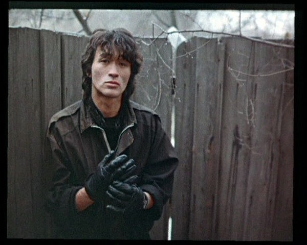

В начале 1984 года Цой и Каспарян приступили к записи второго альбома.Роль продюсера исполнил Гребенщиков, позвав на запись многих своих знакомых — Александра Титова (бас-гитара), Сергея Курёхина (клавиши), Петра Трощенкова (ударные), Всеволода Гаккеля (виолончель), Игоря Бутмана (саксофон) и Андрея Радченко (барабаны).По окончании работы над альбомом сформировался «электрический» состав «Кино», в который, кроме Цоя, вошли Каспарян (соло-гитара), Титов (бас-гитара) и Гурьянов (ударные), и с мая 1984 года начали активно репетировать новую концертную программу. Тогда же музыканты выступили на II фестивале «Ленинградского рок-клуба», где произвели настоящую сенсацию, став его лауреатами.
История
Самое начало
Группа «Кино» образовалась из участников двух ленинградских бит-групп — «Палата № 6» и «Пилигрим». В первой на бас-гитаре играл Виктор Цой, а во второй состояли гитарист Алексей Рыбин и барабанщик Олег Валинский. Летом 1981 года трое друзей пришли к решению о создании собственной общей группы под названием «Гарин и гиперболоиды».Осенью 1981 года музыканты вступили в «Ленинградский рок-клуб». В начале 1982 года название коллектива сменилось на «Кино».
Уход Рыбина
Зимой 1983 года группа дала несколько концертов.Рыбин стал приводить на репетиции басиста Максима Колосова, а позднее — гитариста Юрия Каспаряна. По словам Гребенщикова, Каспарян не очень хорошо играл на гитаре, но быстро прогрессировал и в итоге стал вторым по значимости участником «Кино».
Обязанности между Цоем и Рыбиным чётко распределились: первый отвечал за творческую составляющую — написание текстов и музыки — второй же выполнял всю административную работу. В марте 1983 года между ними разразился серьёзный конфликт, ставший итогом многочисленных разногласий. Цоя, в частности, раздражало, что Рыбин на стороне исполняет его песни, а своих не пишет, в то время как Рыбину не нравилось безоговорочное лидерство Цоя в принятии всех решений. В конечном счёте, они просто перестали созваниваться и с тех пор никогда больше не виделись. После распада группы Рыбин уехал играть с панк-командой «Футбол», а Цой, за неимением состава, на некоторое время прекратил музыкальную деятельность, из-за чего ему пришлось пропустить I фестиваль «рок-клуба».
Формирование группы

Популярность
Обретя популярность, группа стала получать приглашения из разных социалистических республик и даже из некоторых стран дальнего зарубежья. В рамках движения «Next Stop» состоялся благотворительный концерт в Дании.В период с 1986 по 1988 года Виктор Цой активно снимался в кино: сначала в «Ассе» Сергея Соловьёва, потом в «Игле» Рашида Нугманова.
В 1989 году музыканты поехали в Нью-Йорк, где состоялся премьерный показ фильма «Игла» и был сыгран небольшой концерт. После этого группа уехала в Париж, где происходил процесс сведения альбома «Последний герой».
В 1989 году на прилавках появился альбом «Звезда по имени Солнце». Черновые наброски к нему составлялись ещё весной 1988 года, а сама запись была произведена в конце декабря. Группа поучаствовала в популярной телепрограмме «Взгляд» и предприняла попытку записи нескольких видеоклипов (на песни «Видели ночь», «В наших глазах», «Группа крови», «Дальше действовать будем мы» и «Звезда по имени Солнце»).
Клипы получились довольно неплохими и попали в ротацию ведущих телеканалов страны. Кроме того, музыканты вынашивали идею о создании отдельного поп-коллектива, который мог бы исполнять накопившиеся «лёгкие» песни.
В декабре 1989 года, вместо Белишкина, продюсером стал недавно освободившийся после отбывания наказания Юрий Айзеншпис; весной группа отправилась в Токио, где был заключён договор по раскрутке в Японии.
Последний альбом
В июне 1990 года, окончив тяжёлый гастрольный сезон, музыканты хотели записывать новый альбом, сведение которого планировалось во Франции, но перед этим решили взять небольшие каникулы и разъехались отдыхать. В полной мере планам не суждено было осуществиться, поскольку 15 августа, возвращаясь с рыбалки, Виктор Цой погиб в автокатастрофе на 35-м километре старого шоссе «Слока—Талси», в нескольких десятках километров от Риги. Смерть музыканта стала потрясением для всей советской общественности.
К этому моменту полностью была готова только песня «Красно-жёлтые дни»; ещё несколько песен сохранились в черновых вариантах с акустической гитарой Цоя и частично сделанными инструментальными партиями. Осенью в студии ВПТО «Видеофильм» Каспарян, Тихомиров и Гурьянов дописали аранжировки для имевшихся четырёхканальных записей и завершили альбом, получивший в народе название «Чёрный» (за полностью чёрный цвет обложки).
После этого группа «Кино» надолго прекратила своё существование.
Воссоединение
2012
В 2012 году был показан документальный фильм «Цой — Кино», в котором прозвучала новая песня группы — «Атаман». Старые участники коллектива собрались, чтобы завершить эту песню.
После издания песни, 20 июля 2013 года умирает барабанщик группы Георгий Гурьянов.
2020
В 2019 году сын Виктора Цоя Александр Цой предложил организовать концерты группы, в которых использовался бы вокал Виктора Цоя из старых песен, но при этом живая музыка бывших участников группы и специально разработанный видеоряд. Предполагается, что на сцену выйдут музыканты «Кино» — Тихомиров, Титов и Каспарян, барабанные партии исполнит Олег Шунцов (участник проекта «Симфоническое кино»), на акустической гитаре сыграет Дмитрий Кежватов из группы «Тараканы!».
В марте 2021 года состоялся выход нового концертного альбома группы под названием «Кино в Севкабеле», на котором участники группы в возрождённом составе исполнили множество хитов в «тяжёлом» звучании.
В ноябре 2022 года группа сообщила о выходе альбома, в который вошли все студийные записи в современном звучании за прошедшие десять лет. Релиз альбома, получившего название «12_22», состоялся 22 декабря.
Состав
Текущий состав
Юрий Каспарян — соло-гитара, бэк-вокал (1983—1991, 2012, 2020—наст. время).Александр Титов — бас-гитара, бэк-вокал (1984—1985, 2020—наст. время).
Игорь Тихомиров — бас-гитара, бэк-вокал (1985—1991, 2012, 2020—наст. время).
Бывшие участники
Виктор Цой — вокал, ритм-гитара, акустическая и 12-струнная гитара (1981—1990); бас-гитара (1981—1983; умер в 1990).Алексей Рыбин — соло-гитара (1981—1983).
Олег Валинский — ударные (1981).
Георгий Гурьянов — драм-машина, ударные, бэк-вокал (1984—1991, 2012; умер в 2013).
Альбомы
Студийные альбомы
- 1982 — «45»
- 1983 — «46»
- 1984 — «Начальник Камчатки»
- 1985 — «Это не любовь»
- 1986 — «Ночь»
- 1988 — «Группа крови»
- 1989 — «Звезда по имени Солнце»
- 1991 — «Чёрный альбом»
- 2022 — «12_22»
- Список песен Виктора Цоя